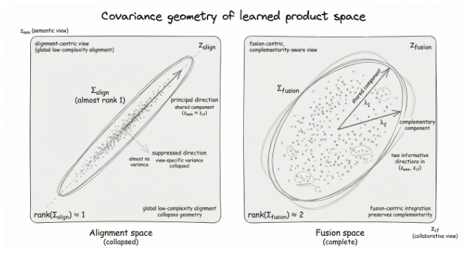
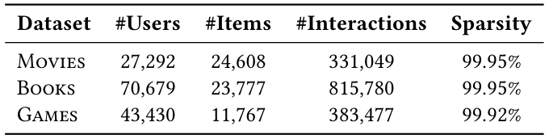
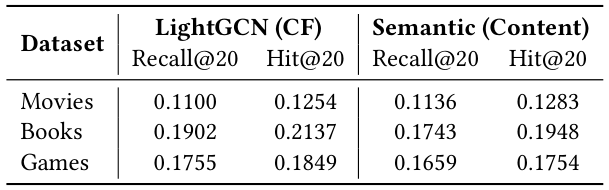
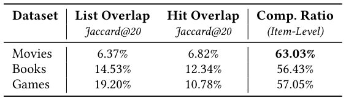
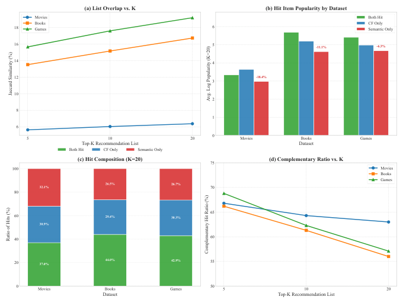
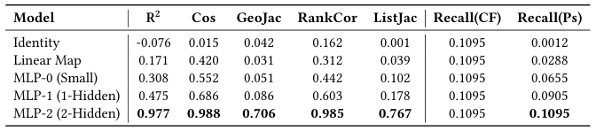
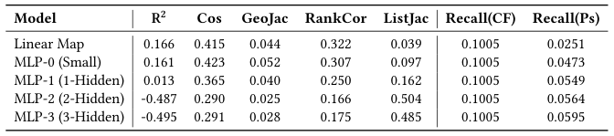
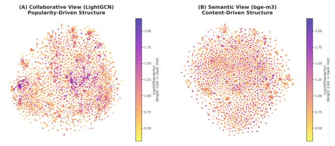

Rethinking Semantic–Collaborative Integration: Why Alignment Is Not Enough (重思语义–协同融合：为何对齐并不足够)
- 会议/期刊: SIGIR 2026
- 推荐链路定位: 召回 (Retrieval) — 双视图表征融合与 Top-K 检索
- 研究方向: 大语言模型推荐 (LLM4Rec) / 协同过滤与双塔召回
- 论文原文: https://arxiv.org/abs/2604.22195v1
- 开源代码: https://github.com/MorinW/Semantic-Collaborative-Integration
TL;DR (核心速览)
本文挑战 LLM 增强推荐中"语义表征应与协同表征全局对齐"的默认假设，形式化为"全局低复杂度对齐假设"并论证其过强。作者提出"共享+私有"潜结构视角，设计重叠度、互补比、Union-TopK 上界等诊断指标，在 Amazon 三个极端稀疏数据集（稀疏度 >99.9%）上证明两视图命中重叠极低（List Jaccard 仅 6.37%–19.20%）、互补比 >55%；一个仅做"Norm-Concat-Norm"的最小融合模型在 Full-Ranking 协议下全面超越 LightGCN/SimGCL/NCL 及 CARec/RLMRec/AlphaRec 等对齐范式，Movies 上 Recall@20 相对最强基线提升 +4.8%（0.1579 vs 0.1507），相对最佳单视图提升 +41.7%。
Background & Motivation (背景与动机)
- 领域背景与主流范式: LLM 已成为现代推荐系统的重要语义基础设施。主流做法是将 LLM 派生语义嵌入通过嵌入初始化、轻量 adapter、对比对齐目标或显式表征匹配注入协同过滤架构。其核心设计范式是表征对齐：将语义嵌入投影/变换/正则，使其逼近交互嵌入的几何结构。
- 现有方法局限 (Limitations of Prior Work):
- 假设过强：对齐范式隐含"语义与协同是同一潜因子的两种参数化，存在低复杂度（线性/浅层 MLP）变换 \(T\) 使 \(e^{CF}_i \approx T(e^{SEM}_i)\)"。但语义由语言建模目标与内容统计塑造，协同由共现、曝光机制、流行度动态塑造，二者生成过程不同。
- 几何坍缩：全局对齐迫使表征几何坍缩到共享秩-1 子空间，压制视图私有方差（见图 1）。
- 稀疏区噪声放大：稀疏/长尾区域的交互表征被噪声主导，强行对齐语义到此类信号会扭曲语义结构、降低鲁棒性。
- 核心挑战 (Key Challenge): 若两视图仅部分共享，全局对齐会扭曲局部邻域结构、压制视图特有信号、降低信息多样性——系统最终只捕获信息源的"交集"而非"并集"。简单的特征拼接或加深网络无法解决，因为问题出在优化目标本身（以一致性为目标）而非容量不足。
- 核心洞察与切入点 (Key Insight): 作者提出共享+私有潜结构：\(z_i = (z^{shared}_i, z^{CF-only}_i, z^{SEM-only}_i)\)。协同嵌入含流行度动态、曝光偏置、反馈回路、位置效应等系统诱导信号；语义嵌入含风格变化、细粒度内容属性，在冷启动/长尾场景提供互补线索。由此提出三条主张：Claim 1（互补性）、Claim 2（低复杂度对齐的局限）、Claim 3（范式转移：从对齐中心转向互补融合中心）。
Problem Formulation & Method (问题定义与方法架构)
1. 符号定义与输入表征 (Notations & Input Representations)
- 用户集 \(\mathcal{U}\)、物品集 \(\mathcal{I}\)；行为数据 \(\mathcal{D}_{beh}\)，物品内容 \(x_i\)。
- 协同嵌入 \(e^{CF}_i = f^{CF}(\mathcal{D}_{beh})\)；语义嵌入 \(e^{SEM}_i = f^{SEM}(x_i)\)。
- 投影头 \(z^{CF}_i = g^{CF}(e^{CF}_i)\)，\(z^{SEM}_i = g^{SEM}(e^{SEM}_i)\)，\(g\) 为线性层或浅层 MLP。
- 语义编码器：BGE-M3，输出 1024 维，线性投影至 \(d=64\)；协同编码器：LightGCN，\(d=64\)，\(L=2\) 层传播。
- 输出：用户/物品融合表征 \(z_u\)，用于内积打分与 Top-K 检索。
2. 整体流水线 (Overall Architecture)
数据流：物品元数据（Title, Category, Description）拼接为文档 \(\to\) BGE-M3 编码（冻结）\(\to\) 线性投影至 \(d=64\)；用户侧对历史物品语义向量均值池化。协同侧：随机初始化 ID 嵌入 \(\to\) LightGCN 式二部图传播（\(L=2\)）\(\to\) 层平均。两路各自 \(\ell_2\) 归一化后拼接，再归一化得融合表征，内积打分。
flowchart TD
A["输入层: 物品元数据(Title/Category/Description) + 用户-物品交互图"] --> B1["语义视图: 冻结BGE-M3(1024d) → 线性投影(d=64)"]
A --> B2["协同视图: ID嵌入 → LightGCN传播(L=2) → 层平均"]
B1 --> C1["用户侧: 历史语义向量均值池化 → Norm"]
B2 --> C2["用户侧: GCN(u) → Norm"]
C1 --> D["Norm-Concat-Norm 融合: z_u = Norm(h_cf ⊕ h_sem)"]
C2 --> D
D --> E["内积打分 / Top-K 检索 (InfoNCE + 动态难负例)"]3. 核心模块设计与数学原理 (Key Designs & Formulations)
(1) 对齐范式的形式化与批判（第 2 节）
主流对齐目标为物品级对比损失：
其中 \(\text{sim}\) 为余弦相似度，\(\tau>0\) 为温度系数。其结构假设是：存在低复杂度 \(T: \mathbb{R}^{d_{SEM}} \to \mathbb{R}^{d_{CF}}\) 使 \(e^{CF}_i \approx T(e^{SEM}_i)\)。作者指出在共享+私有结构下，从一视图恢复另一完整空间是病态问题（每视图含对方不可观测的信息），全局对齐需将私有因子压缩进人造共享几何，扭曲两空间（图 1 左 vs 右）。
(2) 互补性诊断指标（第 3.1.3 节）
设 \(\mathcal{H}^{(A)}_u\)、\(\mathcal{H}^{(B)}_u\) 为模型 A/B 对用户 \(u\) 的 Top-K 正确命中集：
- Hit Jaccard：\(\text{Jaccard@}K = \frac{1}{|\mathcal{U}|}\sum_u \frac{|\mathcal{H}^{(A)}_u \cap \mathcal{H}^{(B)}_u|}{|\mathcal{H}^{(A)}_u \cup \mathcal{H}^{(B)}_u|}\)，越低说明两视图解决不同子集需求。
- 互补比 CompRatio：\(\text{CompRatio@}K = \frac{1}{|\mathcal{U}|}\sum_u \frac{|\mathcal{H}^{(A)}_u \triangle \mathcal{H}^{(B)}_u|}{|\mathcal{H}^{(A)}_u \cup \mathcal{H}^{(B)}_u|}\)，\(\triangle\) 为对称差，越高互补性越强。
- Union-TopK 参考上界 UUB：\(\text{UUB@}K = \frac{1}{|\mathcal{U}|}\sum_u \frac{|\mathcal{T}_u \cap (\mathcal{L}^{(A)}_u \cup \mathcal{L}^{(B)}_u)|}{|\mathcal{T}_u|}\)，衡量两单视图候选列表并集的最大可挖掘命中潜力，用于诊断融合是否真正引入新信息而非仅重排。
(3) 最小融合基线 "Norm-Concat-Norm"（第 3.4.1 节）
语义侧：\(e^{SEM}_u = \text{Norm}\left(\frac{1}{|N_u|}\sum_{i \in N_u} x_i\right)\)，\(h^{sem}_u = \text{Norm}(W_s e^{SEM}_u + b_s)\)；协同侧：\(h^{cf}_u = \text{Norm}(\text{GCN}(u))\)；融合：
拼接前后均做 \(\ell_2\) 归一化，保证两视图等幅贡献（\(\|\cdot\|=1\)），防止更易拟合的协同信号主导融合池。物品侧同理。该设计刻意不含任何对齐损失或生成式微调，用于隔离"融合 vs 对齐"的因果效应。
4. 训练目标、负采样与推理复杂度 (Optimization, Negative Sampling & Complexity)
- 损失函数: 端到端 InfoNCE + 动态难负例挖掘（Dynamic Hard Negative Mining）：每 batch 内以当前融合表征打分最高的物品作为负例。当协同信号判别力弱（稀疏交互）时，梯度推动语义分支去解决难负例，促使两视图互补。语义单视图基线用 InfoNCE（\(\tau=0.15\)）+ 全局负采样；协同基线用 BPR。
- 训练负采样策略: 融合模型采用 batch 内动态难负例；语义基线采用全局负采样；协同基线 BPR 隐式负采样。
- 时间与空间复杂度: 语义编码器 BGE-M3 冻结，仅训练线性投影（\(1024 \to 64\)），离线编码可预计算；协同侧 LightGCN \(L=2\) 传播复杂度 \(O(|\mathcal{E}| \cdot d)\)。在线推理为双塔内积，支持 ANN 检索，无需 Beam Search。原文未报告具体训练单 epoch 耗时、推理延迟（ms/request）与峰值显存。
Experimental Setup & Evaluation Protocol (实验设置与评估协议)
- 数据集统计与预处理: 三个 Amazon Reviews'23 稀疏基准，标准 5-core 过滤，语义文档由 Title + Category + Description 拼接，BGE-M3 编码。
| 数据集 (Dataset) | 用户数 (#Users) | 物品数 (#Items) | 交互数 (#Interactions) | 稀疏度 (Sparsity) | 模态/辅助特征说明 |
|---|---|---|---|---|---|
| Movies | 27,292 | 24,608 | 331,049 | 99.95% | 文本元数据 → BGE-M3 (1024d) |
| Books | 70,679 | 23,777 | 815,780 | 99.95% | 文本元数据 → BGE-M3 (1024d) |
| Games | 43,430 | 11,767 | 383,477 | 99.92% | 文本元数据 → BGE-M3 (1024d) |
- 数据划分方式 (Splitting Strategy): 原文正文未明确说明划分策略（未提及 LOO / Ratio / Global Temporal Split 的具体比例），仅提及"validation set 上 Recall@20 早停"与"test set items"。对齐探针实验中对物品做 80%/20% 随机划分（\(I_{train}\) 为随机 80% 物品）。审稿注：划分细节缺失，无法排除未来信息泄露风险，属可复现性短板。
- 排名评测协议 (Ranking Protocol): 原文未显式声明 Full-Ranking 或 Sampled Ranking；从指标（Recall@10/20、NDCG@10/20）与"test set items"表述推断为全库排序，但未明确正负例构造细节。
- 评价指标与显著性检验: Recall@10/20、NDCG@10/20、Hit@20；诊断指标 List Jaccard、Hit Jaccard、CompRatio、UUB；对齐探针用 \(R^2\)、Cos、GeoJac、RankCor、ListJac。Embedding 维度统一 \(d=64\)。原文未报告多随机种子方差或配对显著性检验（\(p<0.05\)）。
Key Experimental Results (核心实验结果)
1. 主实验对比 (Main Results)
表 6 给出三大范式对比（ID-CF / 对齐映射 / 融合），\(K=10,20\)：
| 数据集 | 指标 | 最强 ID-CF (NCL/SimGCL) | 最强对齐基线 (AlphaRec) | 本文 Naive Fusion | 相对提升 (Improv.) |
|---|---|---|---|---|---|
| Books | Recall@20 | 0.1990 (NCL) | 0.2247 | 0.2404 | +6.99% |
| Books | NDCG@20 | 0.1001 (NCL) | 0.1147 | 0.1248 | +8.81% |
| Movies | Recall@20 | 0.1105 (SimGCL) | 0.1507 | 0.1579 | +4.78% |
| Movies | NDCG@20 | 0.0583 (NCL) | 0.0794 | 0.0902 | +13.60% |
| Games | Recall@20 | 0.1890 (SimGCL) | 0.2000 | 0.2177 | +8.85% |
| Games | NDCG@20 | 0.0870 (SimGCL) | 0.0900 | 0.1026 | +14.00% |
关键结论：无任何对齐损失或生成式微调的最小融合，全面超越 RLMRec、CARec 等"重对齐机器"，直接挑战几何对齐的必要性——保留视图互补（Union）优于强制一致（Intersection）。
表 7 组件分析显示融合模型逼近 UUB：Movies Recall@20 融合 0.1580 vs UUB 0.1594（几乎触顶），相对最佳单视图提升 +41.7%（NDCG@20 +38.3%）；Books +13.4%，Games +21.3%。
2. 消融实验与控制变量分析 (Ablation Study)
本文未采用传统"逐模块移除"消融，而是以范式级对照替代：
- 单视图基线对照（表 2）：LightGCN 与语义模型性能相当（Movies 上语义 Recall@20 0.1136 甚至略高于 CF 0.1100），排除"稻草人"比较。
- 对齐探针容量扫描（表 4/5）：训练物品上 MLP-2 可达 \(R^2=0.977\)、ListJac 0.767（高容量可强行拟合）；但测试物品上 MLP-2 \(R^2=-0.487\)、MLP-3 \(R^2=-0.495\)，Recall(Ps) 仅 0.0564/0.0595，远低于协同上界 0.1005——证明高容量映射是记忆训练对应关系而非学到可迁移几何。这是对 Claim 2 最有力的控制变量证据（冻结双编码器，仅学映射，排除优化伪影）。
- 融合内部命中构成（表 9）：融合模型内部两分支 List Jaccard <0.1（Books 0.0931、Movies 0.0390、Games 0.0861），语义独有命中 21.44%–31.55%、协同独有 32.68%–43.58%、共同命中仅 30.93%–36.79%，说明融合保留了强互补而非坍缩为单一模态。
3. 稀疏度/冷启动分桶与超参敏感度 (Sparsity Buckets & Hyperparameters)
- 流行度分桶（表 8，Head 20% / Mid 20% / Cold 60%）：
- Cold 组：语义视图显著优于协同（Books 0.0690 vs 0.0399；Movies 0.0880 vs 0.0469；Games 0.0830 vs 0.0311），融合保持语义主导（Books 0.0664、Movies 0.0877），避免纯 CF 在长尾的坍缩。
- Mid 组：融合展现强协同，Books 上较最佳内部单视图提升达 +36.8%（0.1270 vs 0.0928）。
- Hot 组：协同主导（Books 0.2720），融合进一步提升至 0.2983。
- 流行度偏移诊断（图 2b）：语义独有命中的平均 Log-Popularity 显著低于 CF 命中（Movies −18.4%、Books −11.1%、Games −6.3%），证实语义视图是长尾补偿器。
- 置信度效应（图 2d）：CompRatio 在 \(K=5\) 达峰（66%–69%），即高置信预测处两视图分歧最大，融合对 Top 排名最关键。
- 关键超参数: \(\tau=0.15\)（语义基线 InfoNCE）、\(d=64\)、LightGCN \(L=2\)、Adam（LR \(1e-3\)、Batch 2048、Weight Decay \(1e-4\)）、每 5 epoch 评估、Recall@20 连续 5 次不升则早停。原文未做 \(\tau\)、\(L\)、\(d\) 的敏感度曲线。
- 线上 A/B 测试: 原文仅包含离线实验，无线上结果。
Highlights, Limitations & Critiques (亮点、局限与审稿级批判)
- 核心亮点与可迁移性:
- 诊断指标体系（CompRatio、UUB、Hit Jaccard）具有强普适性，可直接迁移到任何多视图/多模态推荐融合评估，回答"融合是否真正引入新信息"这一常被忽视的问题。
- 对齐探针协议（冻结编码器 + 容量扫描 + 训练/测试物品分离） 是检验"表征可桥接性"的干净实验设计，可复用于跨域迁移、模态对齐等场景。
- "Norm-Concat-Norm + 动态难负例" 是极简且有效的融合基线，工程落地成本低，可作为 LLM 语义增强召回的默认强基线。
- 图 3 的"流行度核心"可视化直观揭示协同空间的向心性偏置，为长尾去偏提供几何视角解释。
- 局限性与审稿视角批判 (Critical Limitations):
- 定位偏"立场论文"而非方法论文：核心贡献是视角与诊断，融合模型刻意保持极简（线性投影 + 拼接），未提出真正"因子分解式"的共享/私有解耦架构（作者自己在 2.4 节列为未来方向），方法新颖性有限。
- 评估协议披露不足：数据划分策略（LOO/Ratio/Temporal）未明确，Ranking Protocol 未显式声明 Full-Ranking，存在数据泄露不可排除的风险；无多随机种子方差与显著性检验，表 6 中部分差距（如 Movies Recall@20 的 +4.78%）在无方差报告下说服力打折。
- 基线覆盖偏窄：对齐基线仅 CARec/RLMRec/AlphaRec，未与更新的 LLM4Rec 对齐方法（如 CoLLM、UniSRec、ZESRec 等 ID-free 范式）对比；语义编码器仅 BGE-M3，未验证对其他 LLM 编码器的泛化性。
- "对齐有害"结论的边界未充分刻画：作者承认高交互用户（>50 交互）协同主导，但未给出"何时该对齐、何时该融合"的定量判据；表 8 中 Games Cold 组融合（0.0594）反而低于语义单视图（0.0830），说明朴素融合在极端冷启动下并非总优，与"融合全面胜利"的叙事存在张力。
- 效率数据缺失：未报告训练耗时、推理延迟与显存，工业落地价值难以量化评估。
Rating (四维评分)
- 方法创新性 (Novelty): ⭐⭐⭐（视角与诊断指标有新意，但融合方法本身极简，属"反直觉实证 + 概念重构"型工作）
- 评估协议与实验扎实度 (Protocol & Experiments): ⭐⭐⭐（诊断实验设计精巧、探针控制严格，但划分协议披露不足、缺显著性检验、基线覆盖偏窄）
- 写作与数学规范度 (Clarity & Rigor): ⭐⭐⭐⭐（形式化清晰，Claim 1/2/3 与实验一一对应，图表论证链条完整）
- 工业落地与复现价值 (Industrial & Practical Value): ⭐⭐⭐⭐（Norm-Concat-Norm 融合可直接落地，代码开源，诊断工具对工业多视图融合评估有直接价值）
论文图表







